Introduce
Education
| 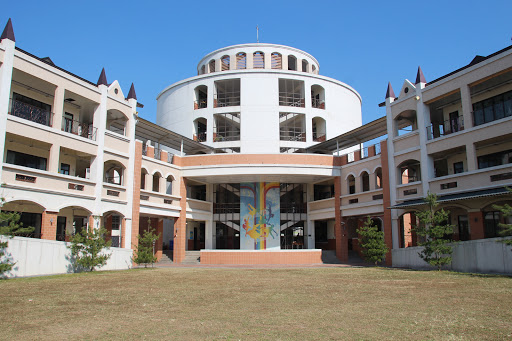 |  |
Experience
| 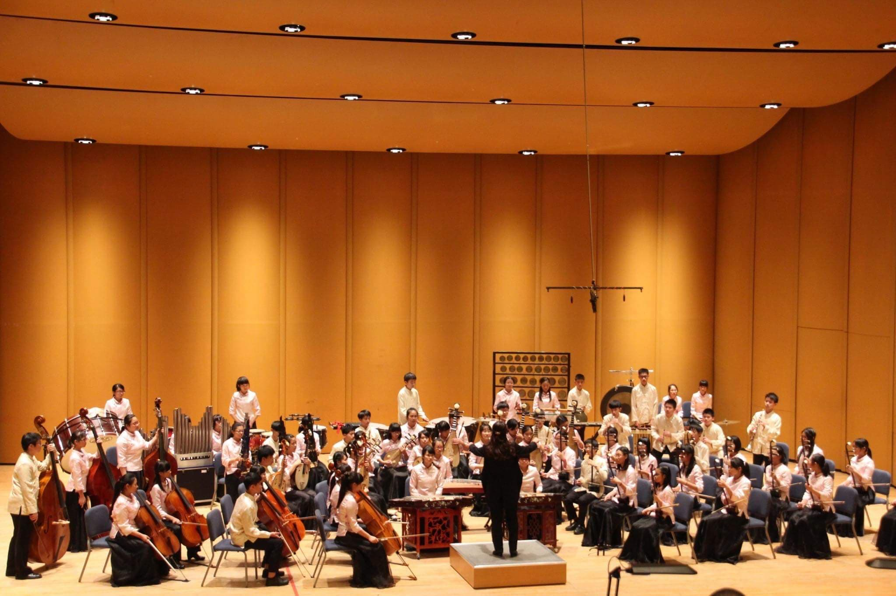 | 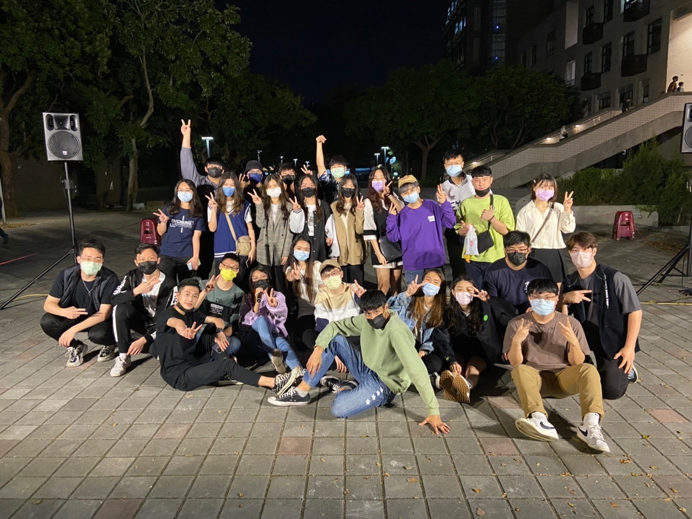 | 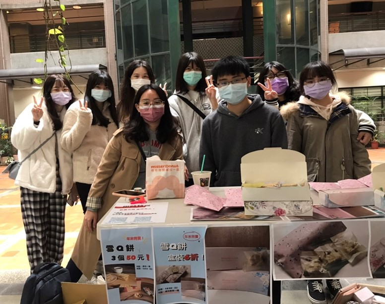 | 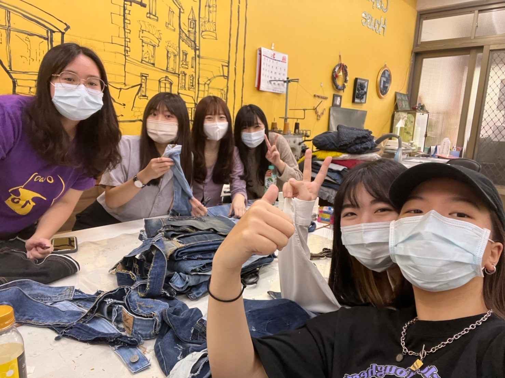 | 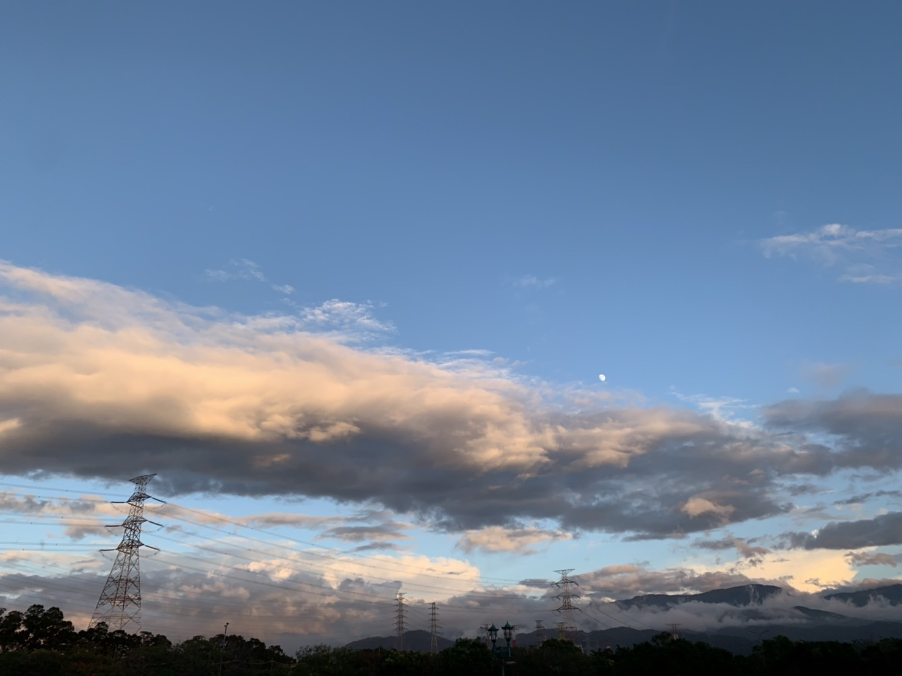 |
國中音樂班:
國中考上了音樂班，開啟了我三年的樂團生活， 學到很多，增進了自己的音樂能力，和團隊合作的能力，雖然已經很久沒有把我的二胡拿出來拉， 但那三年的回憶依舊歷歷在目，也成為我的養分使我茁壯。大學卡拉ok社團:
喜歡唱歌的我，上了大學，馬上就被這個社團吸引， 一年多的活動，給了我舞台能唱歌給大家聽， 也讓我交到很棒的朋友，是大一生活中，很棒的回憶企業概論:
這堂課學到很多東西，也發現我有很多需要改進的地方， 像是簡報的內容必須再簡化，口語表達要再加強，還有我要克服我上台會緊張的問題， 練習不要緊張，穩健我的台風，也再一次次的練習中逐漸成長。真的由衷地佩服所有的執行長， 要對自己的要求比別人高，也慢慢在過程中找到平衡，也知道我有很多不足的地方可以改進， 希望未來得我可以繼續學習，讓我變得更強，這次也是個很棒的體驗，也謝謝我的組員們， 都能包容我這個有點不給力的執行長，讓我在討論中能夠調整自己的步調，讓我能更增強自己， 也認識了很多關於行銷等等的知識。管理學:
這次的體驗很有趣，做的過程依著是在幫助人的信念，也讓我們越做越有動力 未來也希望能多多參加志工活動幫助他人，同時提升自己隨手拍照:
因為自己很喜歡看天空，看到很美的就會記錄下來，拍著拍著就拍上癮了Record life
| 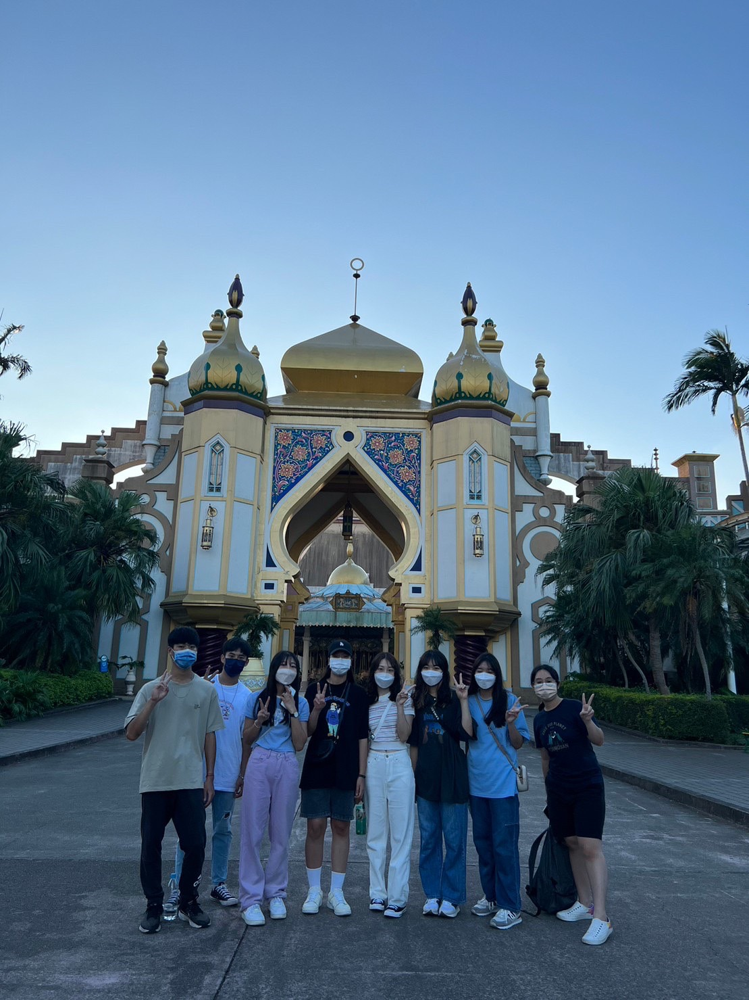 | 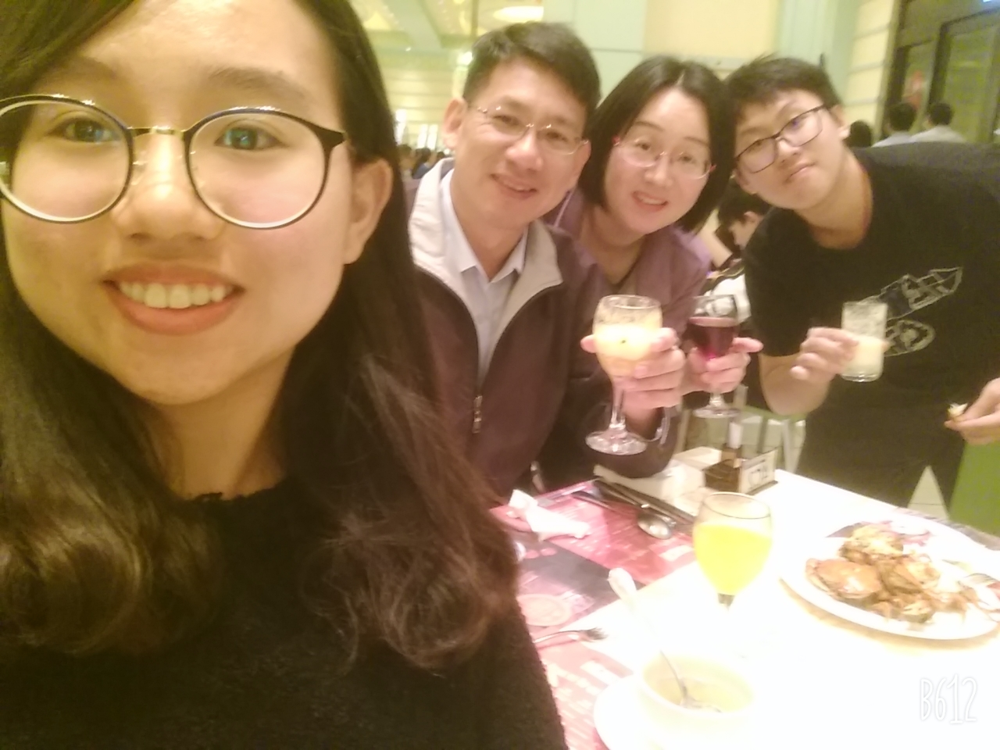 | 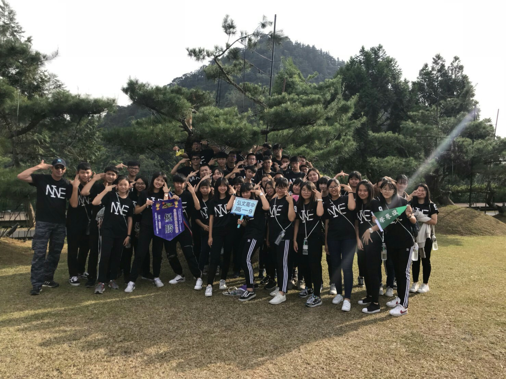 | 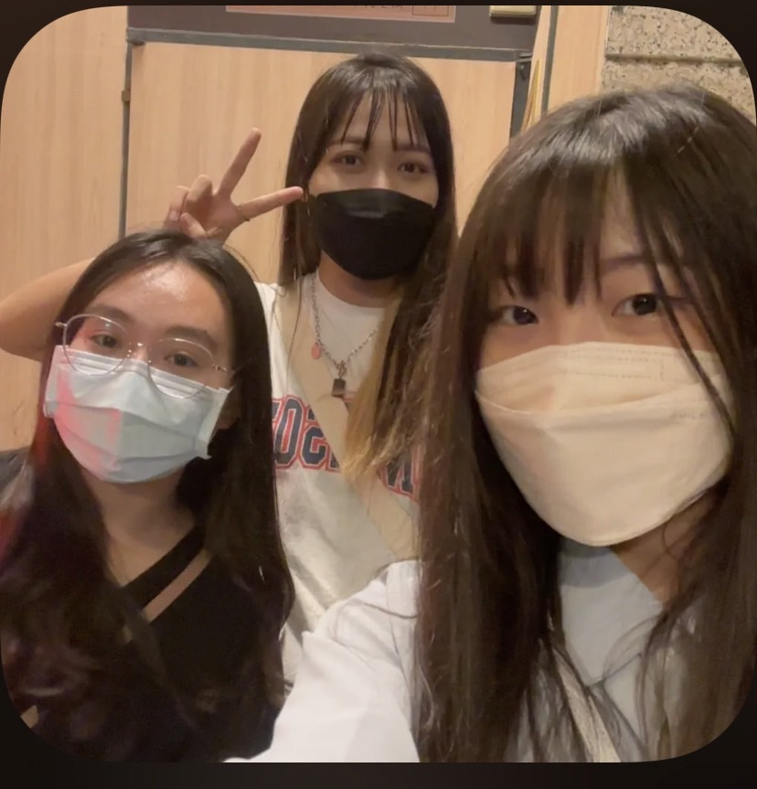 | 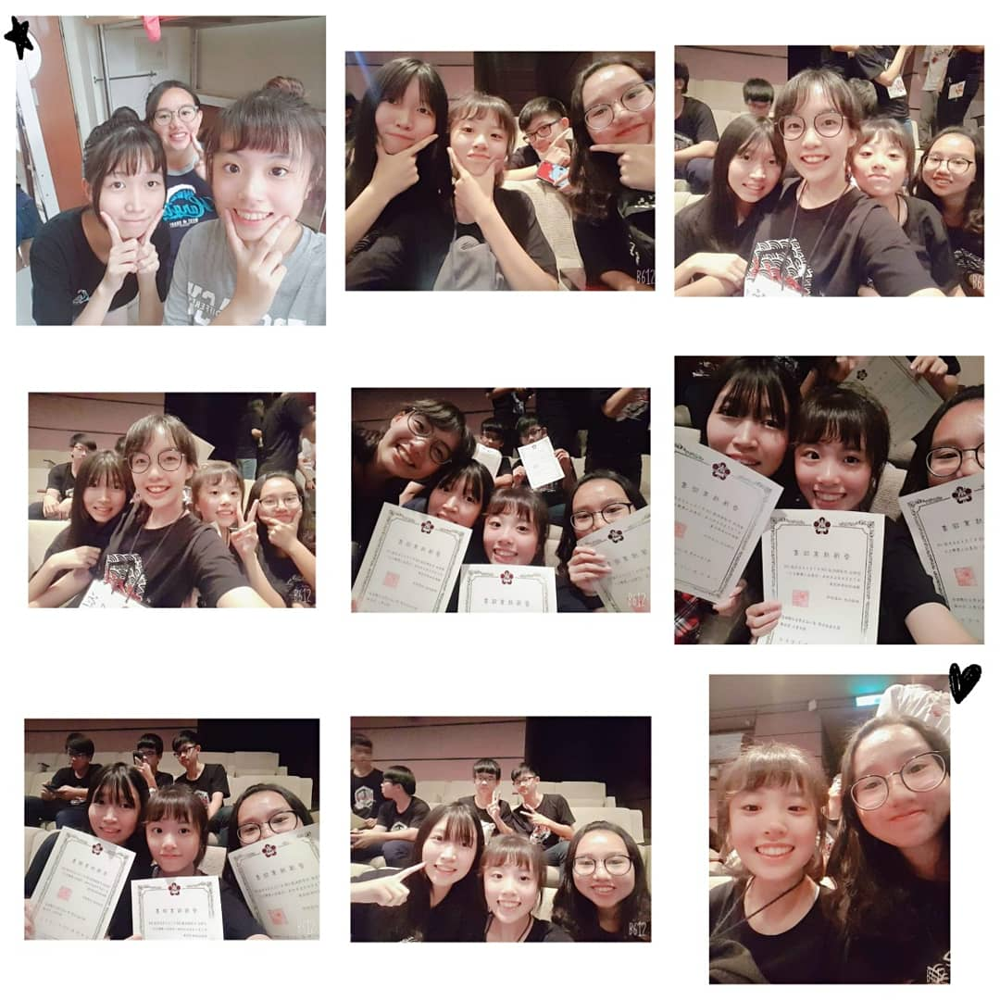 | 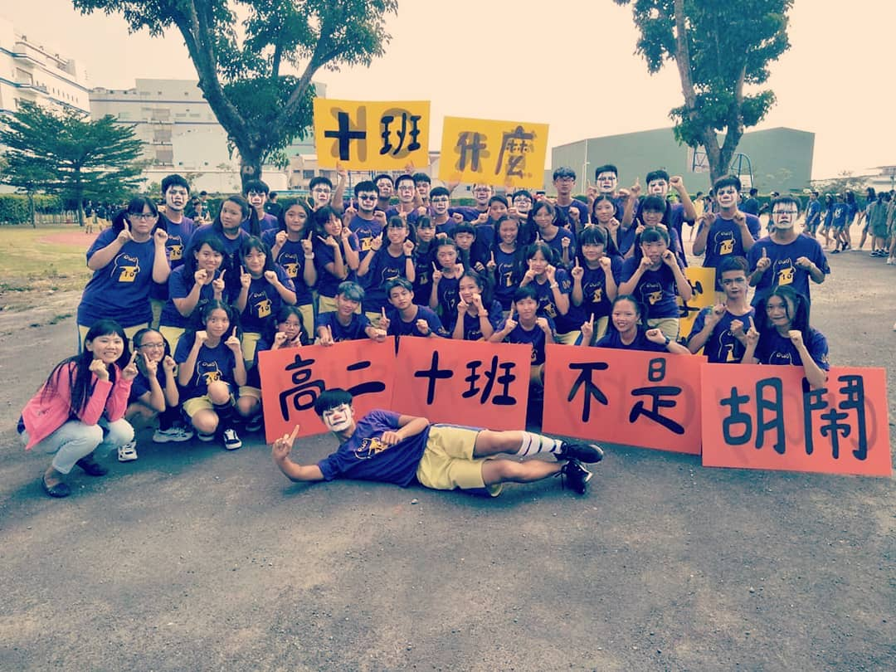 | 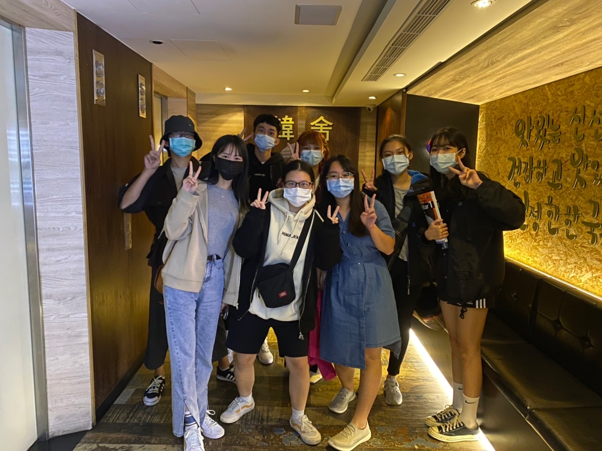 | 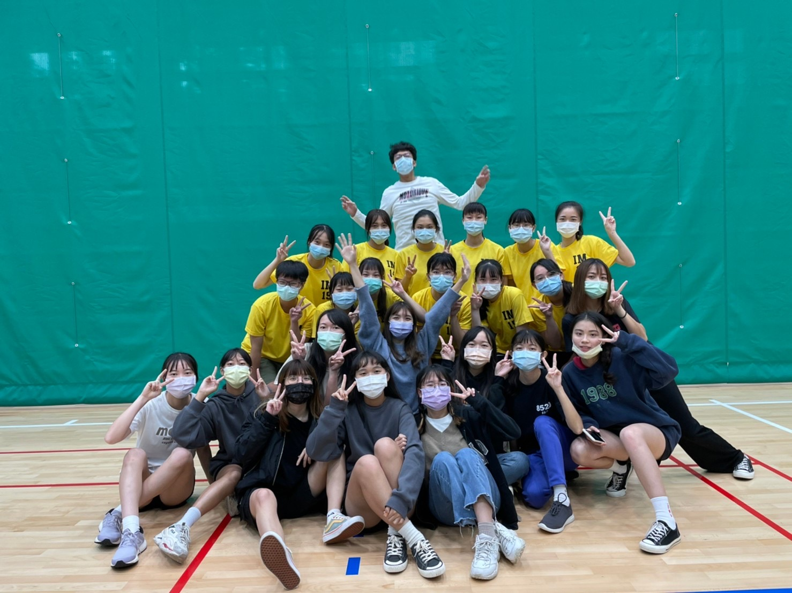 |
每個人都有屬於自己的時區